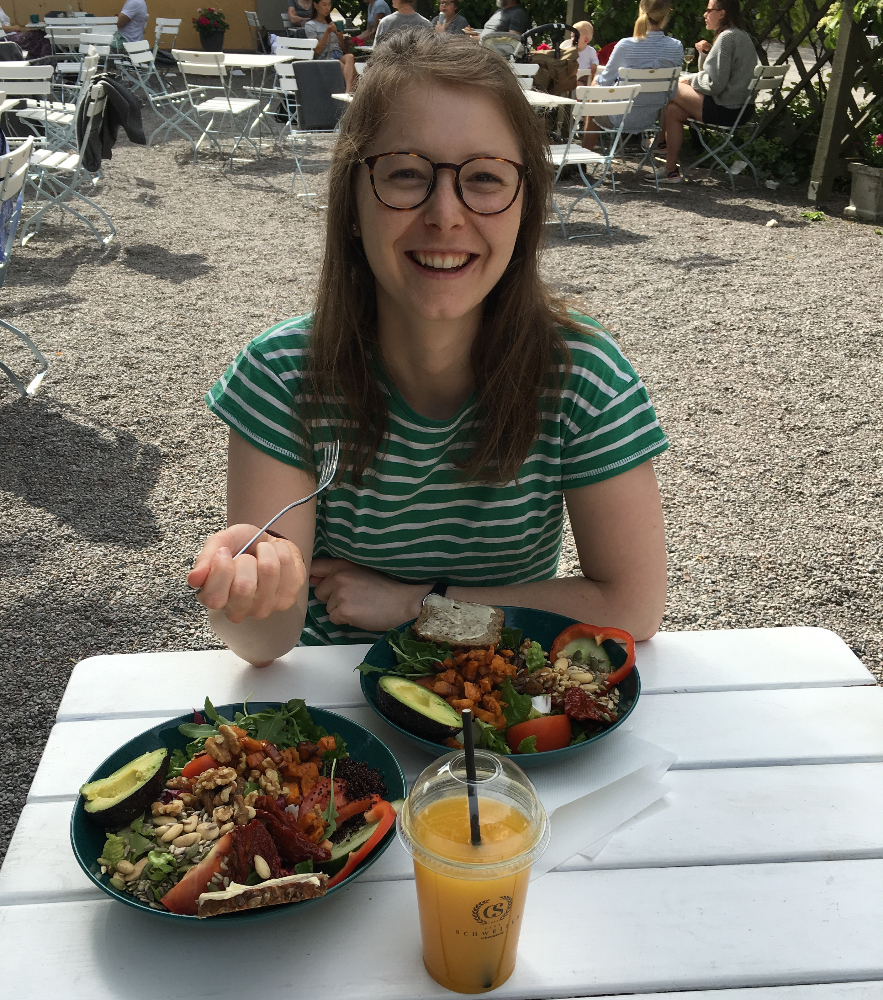

Language Expert

I am originally from Switzerland. Having grown up in a bilingual French-German setting, I have early on been confronted with different linguistic systems and developed a passion for language learning. I am fluent in German, French, and English. Since moving to Sweden in 2017, I have also acquired proficiency in Swedish. Moreover, I speak Spanish and some Mandarin Chinese.
Besides my interest for languages, I enjoy broadening my skillset in other fields. Through projects I have gained experience in typesetting (with LaTeX), front-end development, and automation. Currently I am enjoying my foray into data processing with python.
In my spare time I enjoy cooking and eating(!), playing guitar, boxing and taking care of my beloved plants.
My interest in languages nudged me into the field of Linguistics after High School.
As an undergraduate, I studied General Linguistics at the University of Bern and Chinese studies at University of Zurich.
In 2017 I moved to the capital of Sweden to pursue higher education. Two years later I graduated with a Master’s degree in Linguistics from Stockholm University.
I am specialized in typology and linguistic diversity and am primarly interested in the structural and functional similarities or differences of the languages of the world.
In 2020 I found my way into the area of Language Technology.
Since 2020 I have been working in the Language Technology industry and have become comfortable with the most important worktools (i.e. command line, Git, Docker). By means of self-study, I have acquired a solid foundation in Python and Natural Language Processing tools. Through work projects, I have had the opportunity to learn about and apply Data Science and Machine Learning methods. I am keen to broadening my programming skills and deepening my knowledge about Data Science and Machine Learning.
My journey into Web-design started with the desire of creating my personal online portfolio. While following the course "The Responsive Web-design Bootcamp" by Kevin Powell, I quickly find out that designing a website is fun and very rewarding. I really enjoy the process of creating websites and have completed multiple projects for family and friends. I am eager to learn more about human-computer interaction and hope to engage more in front-end development and UI design in the future.